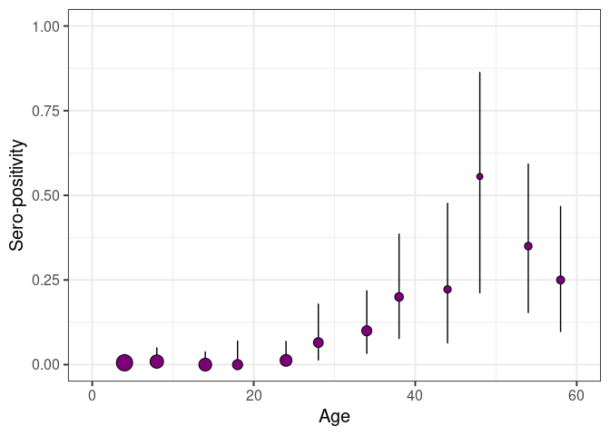

serofoi: force-of-infection from population based serosurveys with age-disagregated data
serofoi is an R package to estimates the Force-of-Infection of a given pathogen from age-disaggregated population based sero-prevalence studies, using a Bayesian framework.
serofoi implements methods outlined in (Cucunubá et al. 2017) and (Carrera et al. 2020)
serofoi relies on rstan
serofoi is part of the Epiverse Initiative.
Installation
You can install the development version of serofoi from GitHub with:
Quick start
The package provides an example dataset of the observed serosurvey data, serodata. This example is the basic entry for the package.
# Load example serodata data included with the package
data(serodata)
head(serodata, 5)
#> survey total counts age_min age_max year_init year_end tsur country test
#> 1 COL-035-93 34 0 1 1 2012 2012 2012 COL ELISA
#> 2 COL-035-93 25 0 2 2 2012 2012 2012 COL ELISA
#> 3 COL-035-93 35 1 3 3 2012 2012 2012 COL ELISA
#> 4 COL-035-93 29 0 4 4 2012 2012 2012 COL ELISA
#> 5 COL-035-93 36 0 5 5 2012 2012 2012 COL ELISA
#> antibody
#> 1 IgG anti-T.cruzi
#> 2 IgG anti-T.cruzi
#> 3 IgG anti-T.cruzi
#> 4 IgG anti-T.cruzi
#> 5 IgG anti-T.cruziThe function prepare_seroprev_data will prepare the entry data for entering the modelling functions. The seroprevalence prepared data can be visualised with the plot_seroprev function. This function also plots the binomial confidence interval of the observed data.
data_test <- prepare_seroprev_data(serodata)
plot_seroprev(data_test, size_text = 15)
Current version of the package runs three different FoI models
The run_seroprev_model function allows specifying the Bayesian model from R, while running in the back from rstan. The number of iterations, thinning, and other parameters can be customised.
NOTE: Running the serofoi models for the first time on your local computer make take a few minutes while the rstan code is compiled locally. Afterwards, no further local compilation is needed.
Model 1. Constant Force-of-Infection (endemic model)
For the endemic model a small number of iterations is enough for achieving convergence, as it only fits one parameter (the constant FoI) from a binomial distribution.
model_1 <- run_seroprev_model(seroprev_data = data_test,
seroprev_model_name = "constant_foi_bi",
n_iters = 500,
n_thin = 2)
#> [1] "serofoi model constant_foi_bi finished running ------"
#> [,1]
#> seroprev_model_name "constant_foi_bi"
#> dataset "COL-035-93"
#> country "COL"
#> year "2012"
#> test "ELISA"
#> antibody "IgG anti-T.cruzi"
#> n_sample "747"
#> n_agec "72"
#> n_iter "500"
#> elpd "-92.88"
#> se "6.44"
#> converged "Yes"Model 2. Time-varying Force-of-Infection (epidemic model)
For the epidemic model, a larger number of iterations is required for achieving convergence, as it fits yearly FoI values from a binomial distribution. The number of iterations required may depend on the number of years, reflected by the difference between year of the serosurvey and the maximum age-class sampled.
model_2 <- run_seroprev_model(seroprev_data = data_test,
seroprev_model_name = "continuous_foi_normal_bi",
n_iters = 1500,
n_thin = 2)
#> [1] "serofoi model continuous_foi_normal_bi finished running ------"
#> [,1]
#> seroprev_model_name "continuous_foi_normal_bi"
#> dataset "COL-035-93"
#> country "COL"
#> year "2012"
#> test "ELISA"
#> antibody "IgG anti-T.cruzi"
#> n_sample "747"
#> n_agec "72"
#> n_iter "1500"
#> elpd "-74.69"
#> se "5.83"
#> converged "Yes"Model 3. Time-varying Force-of-Infection (fast epidemic model)
For the fast epidemic model, a larger number of iterations is required for achieving convergence, compared to the previous models.
model_3 <- run_seroprev_model(seroprev_data = data_test,
seroprev_model_name = "continuous_foi_normal_log",
n_iters = 1500,
n_thin = 2)
#> [1] "serofoi model continuous_foi_normal_log finished running ------"
#> [,1]
#> seroprev_model_name "continuous_foi_normal_log"
#> dataset "COL-035-93"
#> country "COL"
#> year "2012"
#> test "ELISA"
#> antibody "IgG anti-T.cruzi"
#> n_sample "747"
#> n_agec "72"
#> n_iter "1500"
#> elpd "-72.22"
#> se "7.15"
#> converged "Yes"For each model, the plot_seroprev_model function generate a vertical arrange of plots summarising the results of the model implementation plotting functions. Crucially, it shows the (expected) log-predictive density elpd, standard error se, and allows to check convergence based on R-hat convergence diagnostics.
Also, the plot_seroprev_models_grid allows a visual a comparison of the models based on the (expected) log-predictive density elpd, standard error se, and allows to check convergence based on R-hat convergence diagnostics.
For more detailed information and examples, please check the online documentation as package vignettes under Get Started.
Contributions
Contributors to the project include:
Zulma M. Cucunubá (author, maintainer)
Nicolás Tórres (author)
Benjamin Lambert (author)
Pierre Nouvellet (author)
Miguel Gamez (contributor)
Geraldine Gómez (contributor)
Jaime A. Pavlich-Mariscal (contributor)
Package vignettes
More details on how to use serofoi can be found in the online documentation as package vignettes, under “Get Started”.
Help
To report a bug please open an issue.
Contribute
Contributions to serofoi are welcomed. Please follow the package contributing guide.
Code of conduct
Please note that the serofoi project is released with a Contributor Code of Conduct. By contributing to this project, you agree to abide by its terms.
References
Carrera, Jean-Paul, Zulma M. Cucunubá, Karen Neira, Ben Lambert, Yaneth Pittí, Jesus Liscano, Jorge L. Garzón, et al. 2020. “Endemic and Epidemic Human Alphavirus Infections in Eastern Panama: An Analysis of Population-Based Cross-Sectional Surveys.” The American Journal of Tropical Medicine and Hygiene 103 (6): 2429–37. https://doi.org/10.4269/ajtmh.20-0408.
Cucunubá, Zulma M, Pierre Nouvellet, Lesong Conteh, Mauricio Javier Vera, Victor Manuel Angulo, Juan Carlos Dib, Gabriel Jaime Parra -Henao, and María Gloria Basáñez. 2017. “Modelling Historical Changes in the Force-of-Infection of Chagas Disease to Inform Control and Elimination Programmes: Application in Colombia.” BMJ Global Health 2 (3): e000345. https://doi.org/10.1136/bmjgh-2017-000345.